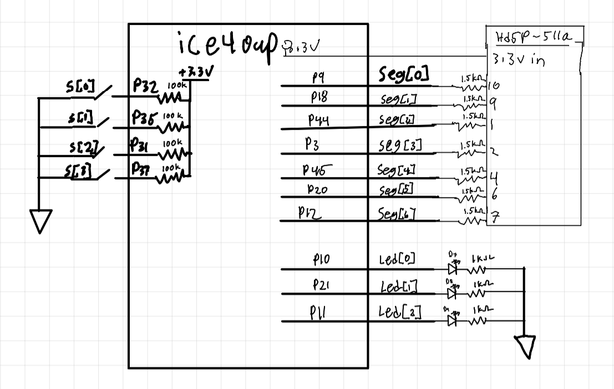
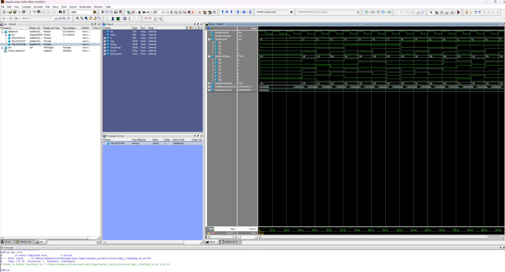

Lab 1: FPGA and MCU Setup and Testing
Introduction
In this lab, we learned general soldering tips, including soldering removable components, pin-through, and SMD components onto a PCB. Using the board, we tested it to make sure that the FPGA and MCU were functioning properly and could communicate with each other as a demo. Our goal in this lab was to test the functionality of our internal High Speed Oscillator (HSOSC module) and divide the clock output to generate a 2.4Hz clock to blink an LED. Another goal was to test that our 4 dip input switches could be read, and with some combinational logic, it was converted to a hex figure on a 7-segment display. Another goal was to understand the truth table provided and convert it to an equivalent logic gate. The 4-dip input switch, while controlling the 7-segment display, also controlled the output to two separate LEDs that represented different logic operations on the dip switch.
Design and Testing Methodology
The on-board high-speed oscillator (HSOSC) from the iCE40 UltraPlus primitive library was used to generate a clock signal at 24 MHz. Then, a clock divider was used to divide the high-frequency clock signal down to 2.4Hz.
Four onboard dip switches were used to represent a binary number, where combinational logic was used to decode the input of the dip switches to the 7-segment display module. The XOR of the first two dip switches, [1:0], was computed and outputted to an LED. Similarly, the last two dip switches, [3:2], were ANDed together and outputted to another LED.
Technical Documentation:
The source code can be found on my GitHub
Block Diagram
Figure 1 shows the Block Diagram for Lab 1 of the top Verilog module grouped by function. There are two submodules in the top module. SegDisp for the 7-segment display decoder and the HSOSC for the built-in oscillator. The counter module is a representation of the RTL in the top module that has been functionally grouped for simplicity.
Schematic

Figure 2 shows the physical implementation of the design. All of the dip switches have an internal pull-up resistor (100kΩ). All of the output LEDs have a 1k limiting resistor to ensure that the FPGA I/O current draw does not exceed ~2.6mA (Calculations are shown in Figure 3)
Results and Discussion

Figure 3 shows the Testbench results for the seven segment hex display. From the waveforms and the console output we can see that all 16 unique inputs output the correct signals on the hex display
Figure 4 shows the testbench results for the 7-segment hex display and the logic LEDs. The blinking LED was omitted in the test, but can be visually inspected.
The design met all design objectives requested. In the future, I would probably spend more time designing the clock divider to simplify the RTL, however, it might not be possible since the clock is being divided by a number that is not a power of two.
Conclusion
The project successfully blinked an LED at 2.4Hz, the dip switches accurately controlled a hex 7-segment display, and two LEDs successfully represented the AND and XOR between pairs of dip switches. I spent around 20 hours on this lab.
AI Prototype Reflection
Initial Code Generated By ChatGPT:
//=============================================================
// Blink LED @ 2 Hz using UP5K Internal HFOSC (48 MHz)
//=============================================================
module blink_led (
output logic led // drive LED pin
);
// ---------------------------------------------------------
// Internal High-Frequency Oscillator (HFOSC)
// UP5K HFOSC can be configured for 48, 24, 12, or 6 MHz.
// ---------------------------------------------------------
logic clk_hfosc;
SB_HFOSC #(
.CLKHF_DIV("0b00") // "00" = 48 MHz, "01" = 24 MHz, "10" = 12 MHz, "11" = 6 MHz
) hfosc_inst (
.CLKHFEN(1'b1), // enable HFOSC
.CLKHFPU(1'b1), // power up HFOSC
.CLKHF(clk_hfosc)
);
// ---------------------------------------------------------
// Clock divider
// We want 2 Hz blinking from 48 MHz input.
//
// Half-period = 0.5s
// 48 MHz * 0.5s = 24,000,000 cycles
//
// Counter counts to 24,000,000 - 1, then toggles LED.
// ---------------------------------------------------------
localparam int HALF_PERIOD = 24_000_000;
logic [$clog2(HALF_PERIOD)-1:0] counter = '0;
always_ff @(posedge clk_hfosc) begin
if (counter == HALF_PERIOD-1) begin
counter <= '0;
led <= ~led; // toggle LED
end else begin
counter <= counter + 1;
end
end
endmodule
I tried feeding in the AI prompt:
“Write SystemVerilog HDL to leverage the internal high speed oscillator in the Lattice UP5K FPGA and blink an LED at 2 Hz. Take full advantage of SystemVerilog syntax, for example, using logic instead of wire and reg.”
But I was not able to synthesize the design even after feeding the error prompts from radiance back to chat gpt with the code.
Final code after 4 iterations:
//=============================================================
// Blink LED @ 2 Hz using UP5K Internal HFOSC (48 MHz)
//=============================================================
module blink_led (
output logic led // drive LED pin
);
// ---------------------------------------------------------
// Internal High-Frequency Oscillator (HFOSC)
// UP5K HFOSC can be configured for 48, 24, 12, or 6 MHz.
// ---------------------------------------------------------
logic clk_hfosc;
SB_HFOSC #(
.CLKHF_DIV("0b00") // "00" = 48 MHz, "01" = 24 MHz, "10" = 12 MHz, "11" = 6 MHz
) hfosc_inst (
.CLKHFEN(1'b1), // enable HFOSC
.CLKHFPU(1'b1), // power up HFOSC
.CLKHF(clk_hfosc)
);
// ---------------------------------------------------------
// Clock divider
// We want 2 Hz blinking from 48 MHz input.
//
// Half-period = 0.5s
// 48 MHz * 0.5s = 24,000,000 cycles
//
// Counter counts to 24,000,000 - 1, then toggles LED.
// ---------------------------------------------------------
localparam int HALF_PERIOD = 24_000_000;
logic [$clog2(HALF_PERIOD)-1:0] counter = 0;
always @(posedge clk_hfosc) begin
if (counter == HALF_PERIOD-1) begin
if (counter == HALF_PERIOD-1) begin
counter <= 0;
led <= ~led; // toggle LED
end else begin
counter <= counter + 1;
end
end
endmodule
We can see that AI currently does not have very good HDL design capabilities. This might be due to the fact that most HDL code is proprietary or more difficult to access compared to non HDL code like C or Python. It seems like ChatGPT tried to make the code dynamic, similar to software, which is tricky to do. ChatGPT used $Clog2 to find the minimum number of bits needed to represent the HALF_PERIOD number. Most HDL programers would make this a fixed value since the clock is hard set at 48MHz when using the clock div = 00.
In general, AI is not good at fully constructing code from the ground up but it can be used to catch minor syntax errors. I think anything beyond that, such as conceptual knowledge in HDL, is not currently done well by AI.